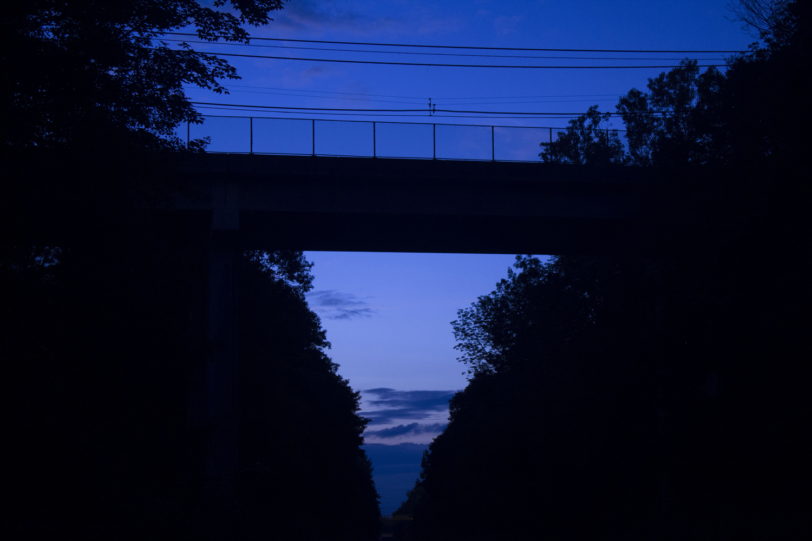

Alex Tomlinson
Photography Portfolio 2017
I usually cycle through 5-10 pictures depending on my mood. Be sure to check back soon or sign up for updates through my Projects page.
Last updated March 5, 2017
Home
Projects
Contact